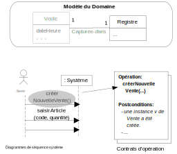

Les contrats d’opération sont le sujet du chapitre 11 . Voici les points importants pour la méthodologie :
- On ne spécifie pas les préconditions dans les contrats.
- Un contrat d’opération correspond à une opération système provenant d’un DSS.
- Ne pas confondre les postconditions d’un contrat d’opération et d’un cas d’utilisation. Ce sont deux choses différentes.
- Une postcondition décrit les modifications de l’état des objets dans le modèle du domaine après une opération système.
- Le vocabulaire pour les postconditions provient du modèle du domaine. Il s’agit des noms de classes, d’attributs et d’associations qu’on trouve dans le MDD.
- Chaque postcondition doit avoir la bonne forme :
- création (ou suppression) d’instances ;
- modification des valeurs des attributs ;
- formation (ou rupture) d’associations.
- En rédigeant les contrats, il est normal de découvrir dans le modèle du domaine des incohérences ou des éléments manquants. Il faut les corriger (il faut changer le MDD), car cela fait partie d’un processus itératif et évolutif.
8.1 Qu’est-ce qu’un contrat d’opération
Un contrat d’opération est un document décrivant ce qui est arrivé après l’exécution d’une opération système. Cette description est présentée sous forme de postconditions utilisant le vocabulaire du modèle du domaine.
Le MDD décrit la vraie vie. Il y a des classes conceptuelles (comme Vente) mais aussi des instances de ces classes. Dans un magasin, pour chaque nouvelle vente, on imagine une nouvelle instance de la classe Vente. S’il y a eu 72 clients qui ont acheté des choses dans un magasin dans une journée, on imagine 72 instances de Vente, une pour chaque client.
Dans la figure 8.1, l’opération système créerNouvelleVente() provient d’un diagramme de séquence système lié au cas d’utilisation Traiter Vente. Elle correspond au moment où le caissier démarre une nouvelle vente pour un client. Avant l’exécution de cette opération, l’instance de la classe Vente indiquée dans le modèle du domaine n’existe pas. Cependant, après l’exécution de l’opération système, l’instance de Vente devrait exister. Le contrat d’opération spécifie ce fait dans une postcondition (avec le passé composé en français) : « une instance v de Vente a été créée ».
Un contrat d’opération permet de spécifier tous les changements dans le MDD qui doivent avoir lieu lors de l’opération système. Les postconditions du contrat saisissent l’évolution du MDD.

créerNouvelleVente, une instance de Vente doit être créée. Le contrat d’opération le spécifie dans une postcondition.8.2 Exemple : Contrats d’opération pour Attaquer un pays
Voir la figure 8.2 pour les changements dans les objets du modèle du domaine correspondant aux postconditions.
Attaquer un pays
Opération : démarrerAttaque(paysAttaquant:String, paysDéfenseur:String)
Postconditions
- une nouvelle instance a de Attaque a été créée
- a a été associée au Pays sur une base de correspondance avec paysAttaquant
- a a été associée au Pays sur une base de correspondance avec paysDéfenseur
Opération : annoncerAttaque(nbRégimentsAttaquant:int)
Postconditions
- a.nbAttaquant est devenu nbRégimentsAttaquant
Opération : annoncerDéfense(nbRégimentsDéfendant:int)
Postconditions
- a.nbDéfendant est devenu nbRégimentsDéfendant
- L’attribut valeur des d1 à d5 est devenue un nombre entier aléatoire entre 1 et 6
- Occupation.nbRégiments est ajusté selon le résultat des valeurs sur une base de correspondance avec paysAttaquant.
- Occupation.nbRégiments est ajusté selon le résultat des valeurs sur une base de correspondance avec paysDéfendant.

8.3 Feuille de référence
Pour faire des contrats, voici une démarche générale :
- Faire un contrat pour chaque opération système.
- Porter une attention à sa signature (les arguments et leur type).
- Rappeler les formes de postconditions :
- créer/supprimer instance ;
- former/briser association ;
- modifier attributs.
- Utiliser le vocabulaire du modèle du domaine dans les postconditions. Ça veut dire qu’il faut parler d’instances de classes conceptuelles, de leurs attributs et des associations entre ces classes.
- Ne pas créer une instance de classe qui existe déjà, par exemple un produit (connu) dans un magasin, un acteur (connu) qui se connecte au système, ou (dans l’exemple de Risk) un Pays (voir la partie basse de la figure 8.2).
- Ne rien oublier. Marquer le MDD ou dessiner un diagramme d’objets, comme à la partie basse de la figure 8.2 si nécessaire.
8.4 Exercices
Exercice 8.1 (terminerAttaque) Rédiger le contrat d’opération pour terminerAttaque(). Il faut considérer le cas où une attaque a réussi. C’est-à-dire le paysDéfenseur change de Joueur (celui du paysAttaquant). Suivez les exemples de contrat d’opération à la Section 8.2.
Exercice 8.2 (Contrats d’opération pour Traiter une vente) Rédigez un contrat d’opération pour chacune des opérations système dans le DSS (et qui soit cohérent avec le MDD) dans la Section B.1. Suivez les exemples de contrat d’opération à la Section 8.2.